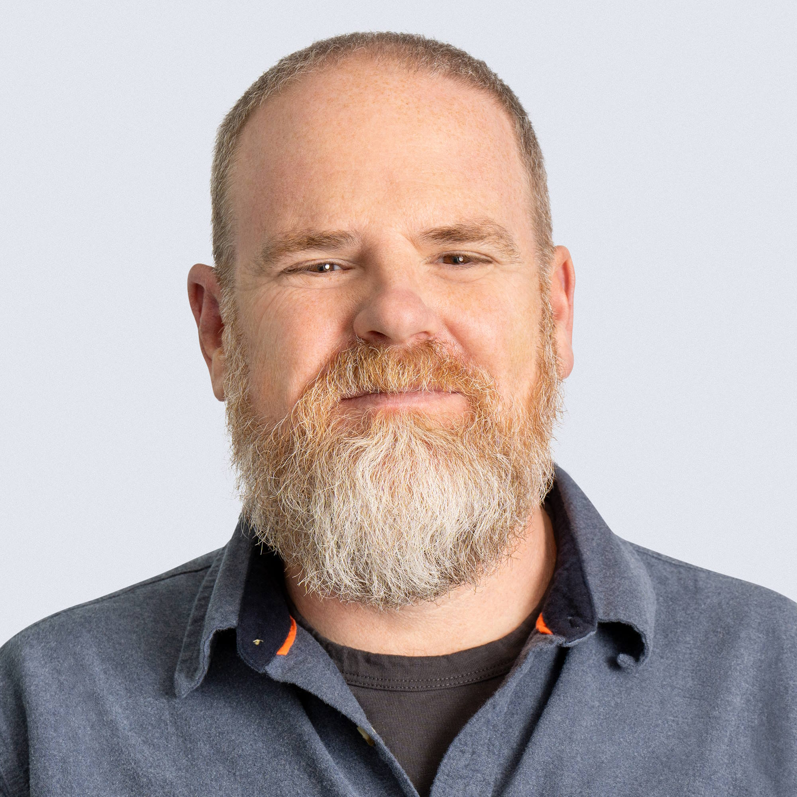

Team
ProteoWizard is downloaded tens-of-thousands of times a year by labs around the world as part of their proteomics workflows, or for incorporation into new computational tools they are building. We'd like to thank the many users who have contributed feedback to the project.
Leadership
 |
Matt Chambers | MacCoss Lab, University of Washington Matt is THE major driver of the ongoing development and maintenance of ProteoWizard and Bumbershoot. Matt has worked in mass spectrometry informatics (mostly proteomics) since 2005; the first ten years he worked for David Tabb and Bing Zhang at Vanderbilt University Medical Center. Since 2015 he worked as an independent consultant. Now he is full-time with the MacCoss lab. He has worked in many subfields within MS, including shotgun proteomics database search, sequence tagging, spectral library search, and protein assembly. Along with Darren Kessner, Matt was the key developer of ProteoWizard. |
| Brendan MacLean | MacCoss Lab, University of Washington Brendan directs all engineering and IT for ProteoWizard. Brendan worked at Microsoft for 8 years in the 1990s where he was a lead developer and development manager for the Visual C++/Developer Studio Project. Since leaving Microsoft, Brendan has been the Vice President of Engineering for Westside Corporation, Director of Engineering for BEA Systems, Inc., Sr. Software Engineer at the Fred Hutchinson Cancer Research Center, and a founding partner of LabKey Software. In this last position he was one of the key programmers responsible for the Computational Proteomics Analysis System (CPAS), made significant contributions to the development of X!Tandem and the Trans Proteomic Pipeline, and created the LabKey Enterprise Pipeline. Since August, 2008 he has worked as a Sr. Software Engineer within the MacCoss lab and been responsible for all aspects of design, development and support in creating the Skyline Targeted Mass Spec Environment and its growing worldwide user community. |
|
 |
Parag Mallick | Stanford University Parag is the PI of the ProteoWizard project and President of the ProteoWizard Software Foundation. |
Key Active Contributors
|  | Brian Connolly | MacCoss Lab Over the years Brian has worked for a number of companies in the Seattle area including Microsoft, BEA Systems and Cray. In 2007 Brian joined LabKey where he wore a number of hats. He helped LabKey's customers design and operate their LabKey Servers and pipelines. He architected and operated all of LabKey's Servers running in the public cloud (AWS and other cloud vendors) and became an expert in FISMA and HIPAA regulations. As part of the Skyline Team, Brian is responsible for managing growth of the PanoramaWeb.org and Skyline.ms servers and helping the team grow its use of the AWS cloud. |
 |
Brian Pratt | MacCoss Lab Brian's computing career extends all the way back to the days of the Apple II and TRS-80. Along the way there have been a couple of startups, with forays into robot-assisted surgery, circuit board manufacturing and test, internet firewalls, and, most recently, mass spec. Brian's proteomics work prior to joining the Skyline team included contributions to TPP, X!Tandem, LabKey's CPAS, and ProteoWizard. He's excited to be on a team of software professionals that value performance, reliability, and usability in the support of science. |
 |
Ravali Adusumilli | Mallick Lab Ravali has been working on ProteoWizard documentation and integration with workflow systems. |
Alumni
| Dario Amodei | Mallick Lab Dario contributed to benchmarking, and also did a lot of work with Skyline's DIA implementation. He is now CEO of Anthropic. |
|
 |
Robert Burke | Mallick Lab, USC CAMM Rob developed a huge chunk of the core code within Proteowizard. He was particularly involved in mspicture, the ProteoWizard pseudo-2D gel image creation tool and on our mzIdentML implementation. |
| Michael Doshi | Mallick Lab Michael graduated from Stanford in computer science and contributed to numerous aspects of our website including our licensing and download functionality that connects to our continuous integration server. |
|
 |
Jarrett Egertson | MacCoss Lab Parag hooked me on proteomics back in 2006 and it's been a great ride ever since. I work on the development of instrumentation, acquisition methods, and analytical tools for targeted data independent acquisition (DIA) approaches. I have developed algorithms for handling multiplexed (MSX) DIA data that are currently implemented in Skyline. Jarrett is now Director of Bioinformatics at Nautilus Biotechnology. |
| Kate Hoff | Mallick Lab, USC CAMM Kate was previously a bioinformatics analyst in Mallick lab. Now, she's the Department Chair of Mathematics Northfield Mt. Hermon. |
|
| Darren Kessner | Mallick Lab, Stanford University & USC CAMM Darren is responsible for the design of ProteoWizard, and the initial implementation of the libraries and tools. Previously a software developer in Mallick lab, Darren completed his Ph.D in genetics and is now teaching computer science at Marlborough School. |
|
| Natalie Tasman | Insilicos Natalie provided critical early feedback on integrating ProteoWizard with the Trans-Proteomic Pipeline, and has contributed vendor data reading code to ProteoWizard. |